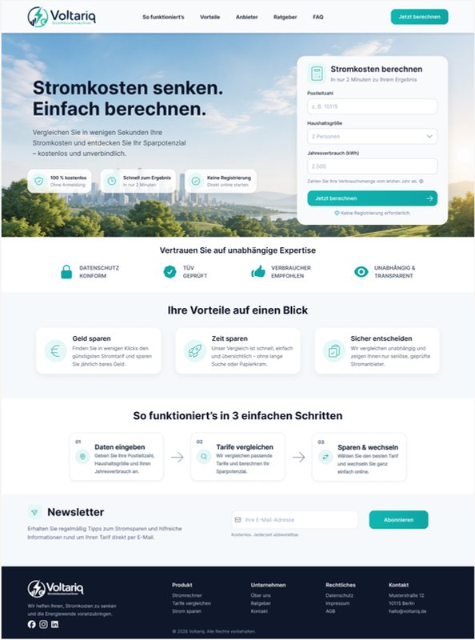
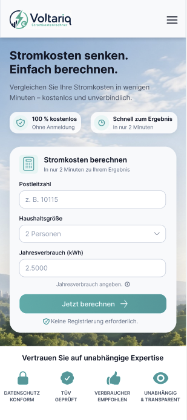
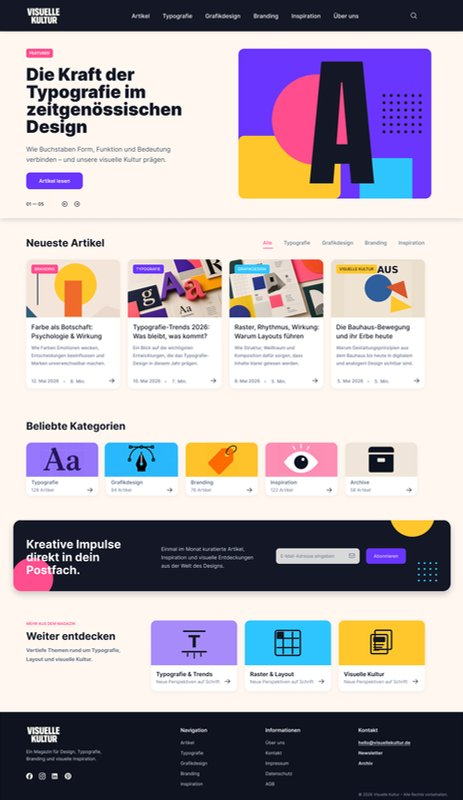
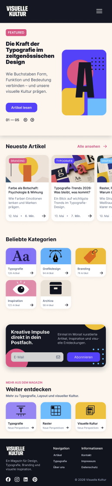

Two concept projects from my UX/UI Design training at the Onlineschule für Gestaltung, completed in 2026: an electricity cost calculator and a responsive blog layout. Both designed in Figma, from structure to mobile adaptation.
A comparison page with one job: get visitors into the calculator. The form sits in the hero, right next to the promise, so nobody has to scroll to start. It asks for three things only – postcode, household size and annual consumption – with a default value and a hint on where to find the consumption figure.
Below the hero, every section answers one doubt that stops people from entering their data: trust signals first, then the benefits, then a three-step explanation of how the comparison works. The first step names exactly the fields the visitor has just seen in the form, so the page explains itself.
On mobile, the form follows directly after the headline and spans the full width. The benefit badges are reduced to two and the navigation collapses into a menu, so the first screen still leads straight into the calculation.


A magazine about design and typography. The hero leads with a single featured article; below it, the latest articles can be filtered by category without leaving the page. Popular categories with article counts offer a second way in for readers who browse by topic.
All article cards follow the same pattern – category tag, title, teaser, date and reading time – so the overview stays scannable. The newsletter block sits after the content that earns the sign-up, and "Weiter entdecken" leads into further topics instead of a dead end.
On mobile, the latest articles turn into a horizontal swipe row with an "Alle ansehen" link, the categories wrap into a compact grid and the newsletter block stacks vertically – the order of the page stays the same, only the proportions change.


The training sharpened how I look at every landing page: hierarchy first, then copy, then the visual layer. How I apply it: One message per section.
Responsive design is not about scaling down. It is about consciously adapting content, proportions and hierarchy to each screen.